So you want to play paintball?
In this 9 step tutoral you will learn the basics of paintball and be ready to play
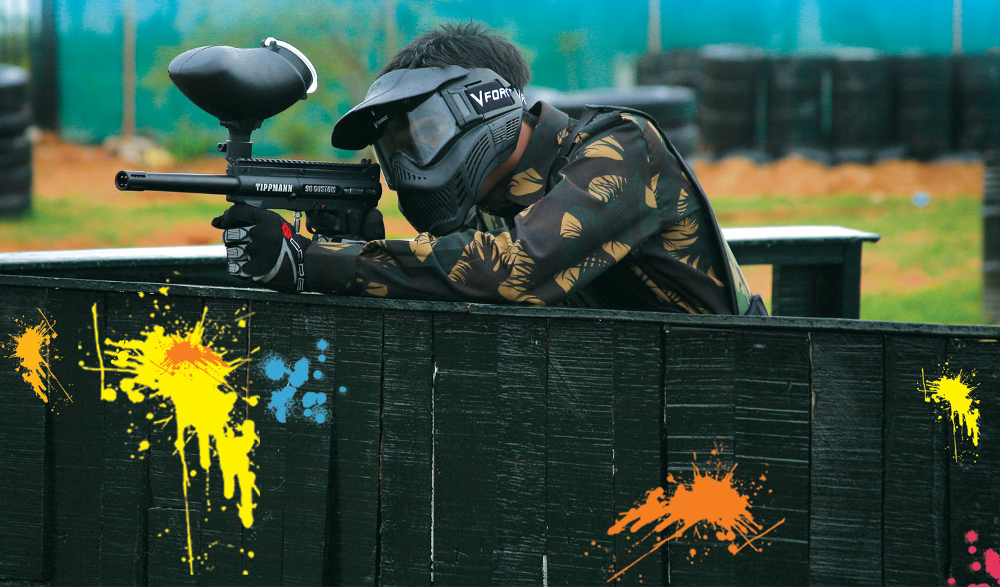 Start InfoIn this 9 step tutoral you will learn the basics of paintball and be ready to play
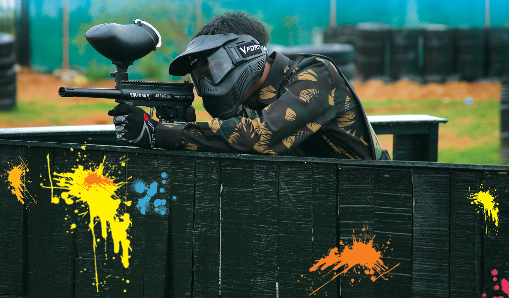 Start InfoPaint ball is an outdoor sport where players fire paint filled gell balls at each other. The way that your paintball gun or marker as its known works is it uses compress gas , CO2 or Air. The legal field limit for the power of your gun is 300ft/s, with this power safety is a must. Getting hit on your body may hurt but body protection is not needed but an eye/face mask is required.
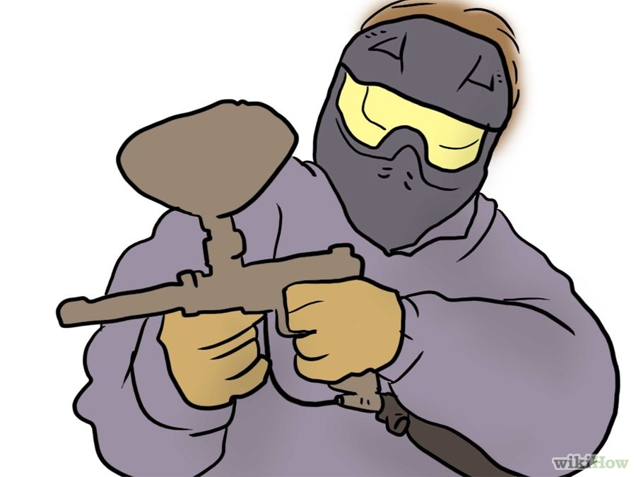 Next stepThe way that your marker shoots paintballs is it uses a compressed gas normaly CO2 or pressurized Air
The air comes is metal tanks , you should always inspect your tank before using it, be on the lookout of cracks or bad O rings
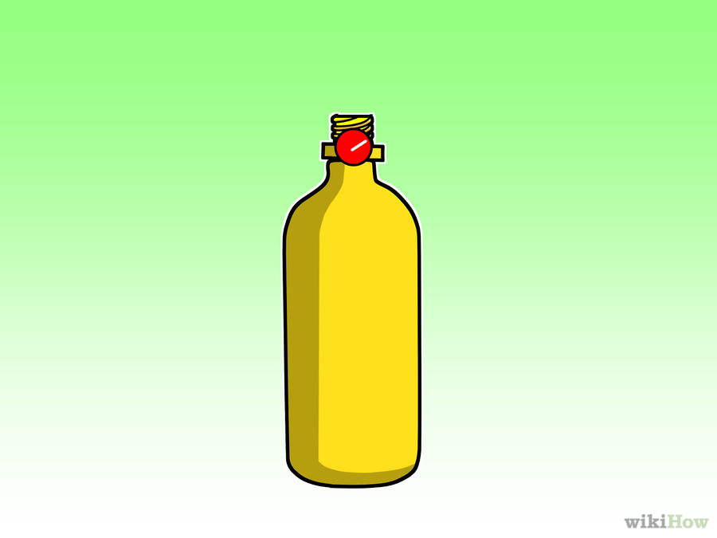 Previous step Next StepYour metal tank attaches to the bottom of your marker, this adapter is called ASA or Air system adapter.
Slowly screw in your tank , keep going until you can longer twist it , make sure you hear a "hisss" when your tank goes in , this is a normal sound and means everything is working.
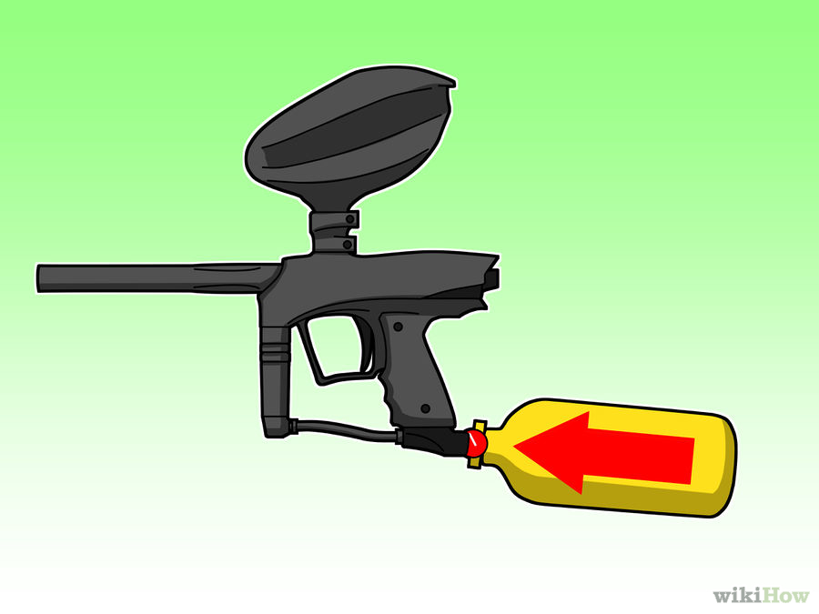 Previous step Next StepThe type of ammo a paintball marker uses should be a no brainer , paintballs!
Most paintball guns shoot .68 paintball , commonly called 68 caliber, before shooting any paint do a quick test fit to see if the paint fires right.
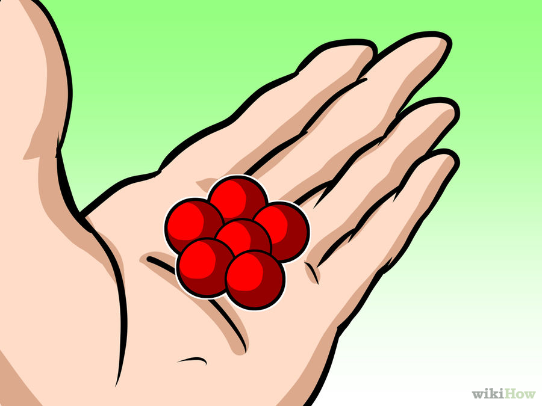 Previous step Next StepEvery paintball marker has a safety on it
The location of the safety varies but most arer located near the trigger , remember when the red ring on the switch is out the gun will fire, and when you can't see the red it will not shoot
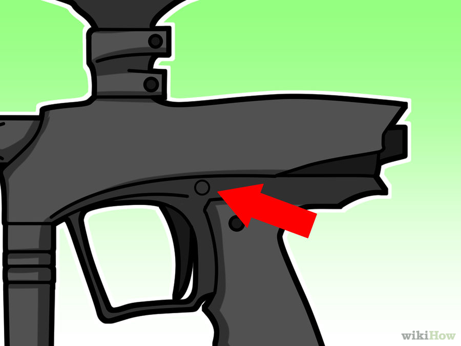 Previous step Next StepHaving your paintball shoot at a good consistency your air needs to be consistent pressure
Air is messured in PSI , the avarage paintball tank hold 3000psi which can shoot around 300 paintball, the minimum pressure you need to shoot is 850psi this
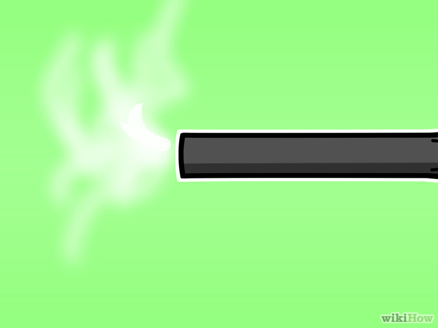 Previous step Next StepYour paintball marker needs regular maintenance to preform at its peek
Maintaning your marker is straightforward, first make sure your O rings aren't discoloring and you clean your barrel after every game.
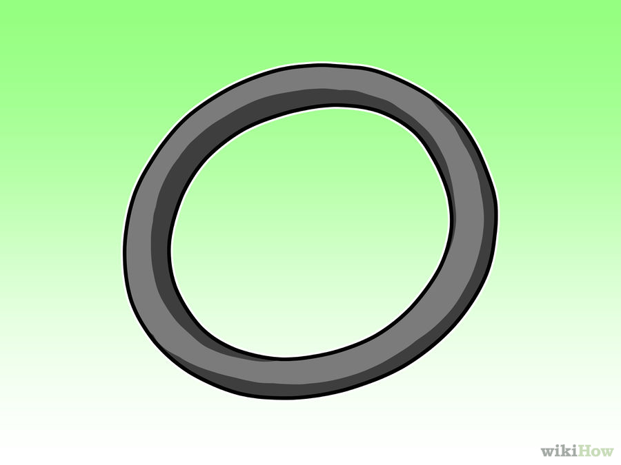 Previous step Next stepNo one likes playing with a cheater
The rules of paintball are very straight forward, most rules vary but the main two are as follows , when you are hit raise your arms (keep your mask on) and always listen to the ref.
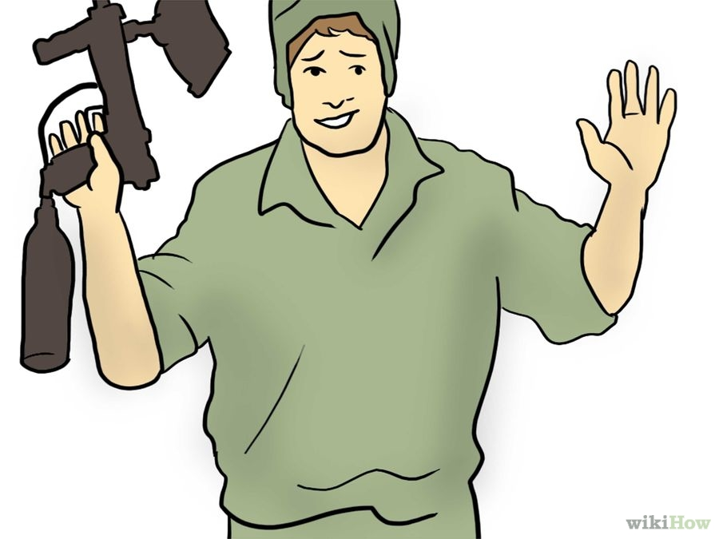 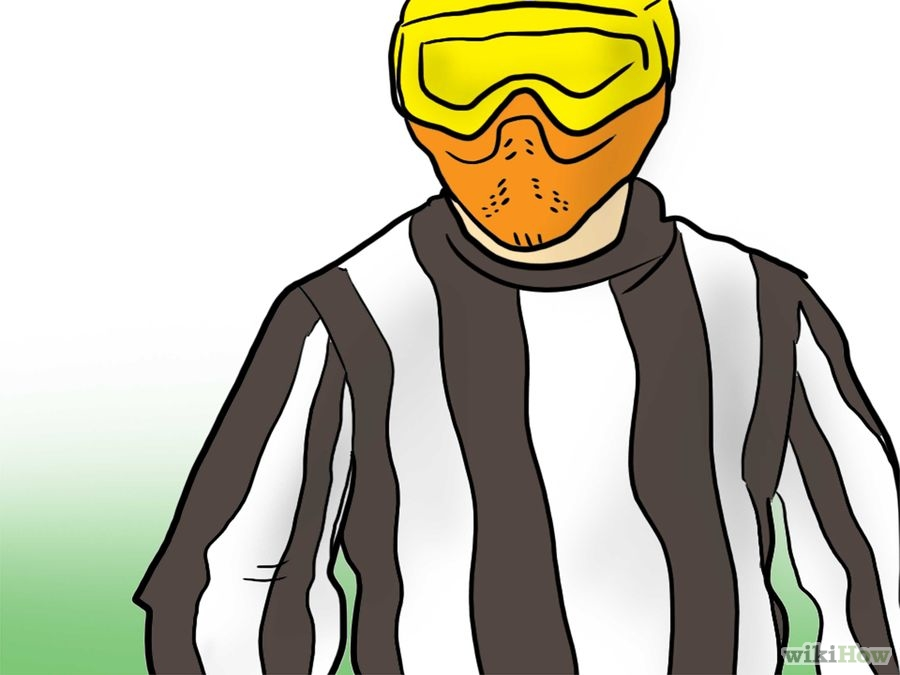 Previous step NextWhile these are only the basics they cover the majority of the things you need to know about paintball
While paintball is a relatively old sport is constantly evolving so dont forget to keep learning
Previous stepsimple 9 step tutorial of the basics of paintball , bla bla bla, some words and info.
home